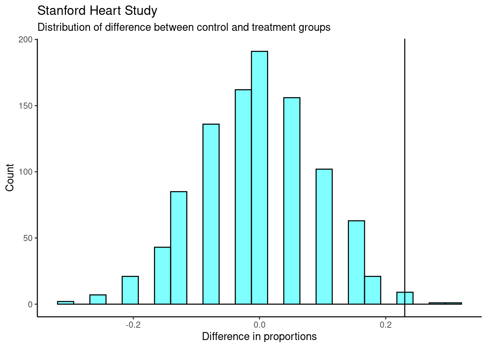

Chapter 16 Case Study
16.1 Objectives
- Define and use properly in context all new terminology.
- Conduct a hypothesis test using a permutation test to include all 4 steps.
16.2 Homework
16.2.1 Problem 1
Side effects of Avandia
Rosiglitazone is the active ingredient in the controversial type~2 diabetes medicine Avandia and has been linked to an increased risk of serious cardiovascular problems such as stroke, heart failure, and death. A common alternative treatment is pioglitazone, the active ingredient in a diabetes medicine called Actos. In a nationwide retrospective observational study of 227,571 Medicare beneficiaries aged 65 years or older, it was found that 2,593 of the 67,593 patients using rosiglitazone and 5,386 of the 159,978 using pioglitazone had serious cardiovascular problems. These data are summarized in the contingency table below.
\[ \begin{array}{ccc|cc|c} & & &\textbf{Cardiovascular} & \textbf{problems} & \\& & & Yes & No & Total \\ &\hline \textbf{Treatment} & \textit{Rosiglitazone} & 2,593 & 65,000 & 67,593 \\ & & \textit{Pioglitazone} & 5,386 & 154,592 & 159,978\\ &\hline &Total & 7,979 & 219,592 & 227,571 \end{array} \]
Determine if each of the following statements is true or false. If false, explain why. The reasoning may be wrong even if the statement’s conclusion is correct. In such cases, the statement should be considered false.
- Since more patients on pioglitazone had cardiovascular problems (5,386 vs. 2,593), we can conclude that the rate of cardiovascular problems for those on a pioglitazone treatment is higher.
False. Instead of comparing counts, we should compare percentages.
- The data suggest that diabetic patients who are taking rosiglitazone are more likely to have cardiovascular problems since the rate of incidence was (2,593 / 67,593 = 0.038) 3.8% for patients on this treatment, while it was only (5,386 / 159,978 = 0.034) 3.4% for patients on pioglitazone.
True.
- The fact that the rate of incidence is higher for the rosiglitazone group proves that rosiglitazone causes serious cardiovascular problems.
False. We cannot infer a causal relationship from an association in an observational study. However, we can say the drug a person is on affects his risk in this case, as he chose that drug and his choice may be associated with other variables, which is why part (b) is true. The difference in these statements is subtle but important.
- Based on the information provided so far, we cannot tell if the difference between the rates of incidences is due to a relationship between the two variables or due to chance.
True.
16.2.2 Problem 2
Heart transplants
The Stanford University Heart Transplant Study was conducted to determine whether an experimental heart transplant program increased lifespan. Each patient entering the program was designated an official heart transplant candidate, meaning that he was gravely ill and would most likely benefit from a new heart. Some patients got a transplant and some did not. The variable indicates which group the patients were in; patients in the treatment group got a transplant and those in the control group did not. Another variable called was used to indicate whether or not the patient was alive at the end of the study.
In the study, of the 34 patients in the control group, 4 were alive at the end of the study. Of the 69 patients in the treatment group, 24 were alive. The contingency table below summarizes these results.
\[ \begin{array}{ccc|cc|c} & & &\textbf{Group} & & \\& & & Control & Treatment & Total \\ &\hline \textbf{Outcome} & \textit{Alive} & 4 & 24 & 28 \\ & & \textit{Dead} & 30 & 45 & 75\\ &\hline &Total & 34 & 69 & 103 \end{array} \]
The data is in a file called Stanford_heart_study.csv. Read the data in and answer the following questions.
heart<-read_csv("data/Stanford_heart_study.csv")- What proportion of patients in the treatment group and what proportion of patients in the control group died?
inspect(heart)##
## categorical variables:
## name class levels n missing
## 1 outcome character 2 103 0
## 2 group character 2 103 0
## distribution
## 1 Dead (72.8%), Alive (27.2%)
## 2 Treatment (67%), Control (33%)tally(~outcome+group,data=heart,margins = TRUE)## group
## outcome Control Treatment Total
## Alive 4 24 28
## Dead 30 45 75
## Total 34 69 103tally(outcome~group,data=heart,margins = TRUE,format="percent")## group
## outcome Control Treatment
## Alive 11.76471 34.78261
## Dead 88.23529 65.21739
## Total 100.00000 100.00000So 88.2% of patients in control group died and 65.2% in the treatment group.
One approach for investigating whether or not the treatment is effective is to use a randomization technique.
- What are the claims being tested? Use the same null and alternative hypothesis notation used in the lesson notes.
\(H_0\): Independence model. The variables group and outcome are independent. They have no relationship, and the difference in survival rates between the control and treatment groups was due to chance. In other words, heart transplant is not effective.
\(H_A\): Alternative hypothesis. The variables group and outcome are not independent. The difference in survival rates between the control and treatment groups was not due
to chance and the heart transplant is effective.
- The paragraph below describes the set up for such approach, if we were to do it without using statistical software. Fill in the blanks with a number or phrase, whichever is appropriate.
We write alive on 28 cards representing patients who were alive at the end of the study, and dead on 75 cards representing patients who were not. Then, we shuffle these cards and split them into two groups: one group of size 69 representing treatment, and another group of size 34 representing control. We calculate the difference between the proportion of dead cards in the control and treatment groups (control - treatment), this is just so we have positive observed value, and record this value. We repeat this many times to build a distribution centered at zero. Lastly, we calculate the fraction of simulations where the simulated differences in proportions are 0.23 or greater. If this fraction of simulations, the empirical p-value, is low, we conclude that it is unlikely to have observed such an outcome by chance and that the null hypothesis should be rejected in favor of the alternative.
Next we will perform the simulation and use results to decide the effectiveness of the transplant program.
- Find observed value of the test statistic, which we decided to use the difference in proportions.
obs<-diffprop(outcome~group,data=heart)
obs## diffprop
## 0.230179- Simulate 1000 values of the test statistic by using
shuffle()on the variablegroup.
set.seed(1213)
results <- do(1000)*diffprop(outcome~shuffle(group),data=heart)- Plot distribution of results. Include a vertical line for the observed value. Clean up the plot as if you were presenting to a decision maker.
results %>%
gf_histogram(~diffprop,xlab="Difference in proportions",
ylab="Count",
fill="cyan",
color="black",
title="Stanford Heart Study",
subtitle="Distribution of difference between control and treatment groups") %>%
gf_vline(xintercept =obs ) %>%
gf_theme(theme_classic())
- Find p-value. Think carefully about what more extreme would mean.
results %>%
summarise(p_value = mean(diffprop>=obs))## p_value
## 1 0.011If we wanted to use a hypergeometric. We could use any of the cell in the table. We will use the upper left. More extreme would be 4 or fewer in the control group being alive. We get a similar p-value.
tally(~outcome+group,data=heart,margins = TRUE)## group
## outcome Control Treatment Total
## Alive 4 24 28
## Dead 30 45 75
## Total 34 69 103phyper(4,34,69,28)## [1] 0.01039537- Decide if the treatment is effective.
Under the independence model, only 11 out of 1000 times (1.1%) did we get a difference of 0.23 or higher between the proportions of patients that died in the control and treatment groups. Since this is a low probability, we can reject the claim of independence in favor of the alternate model. There is convincing evidence to suggest that the transplant program is effective.